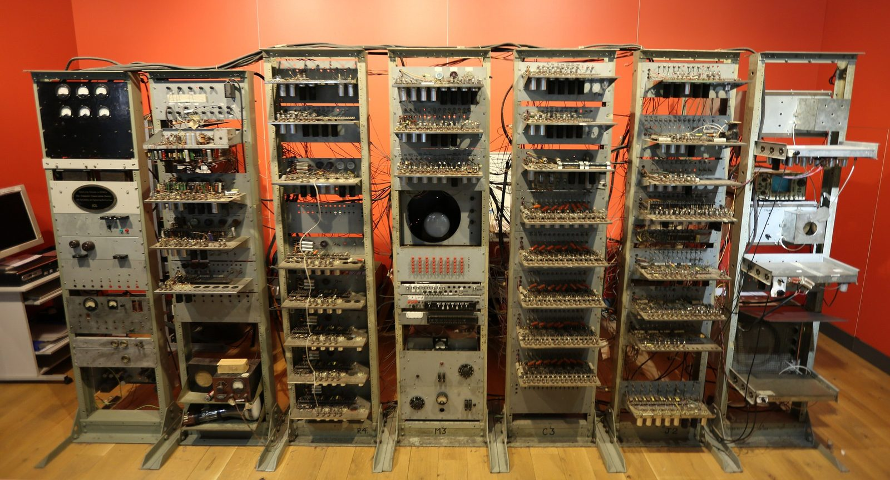
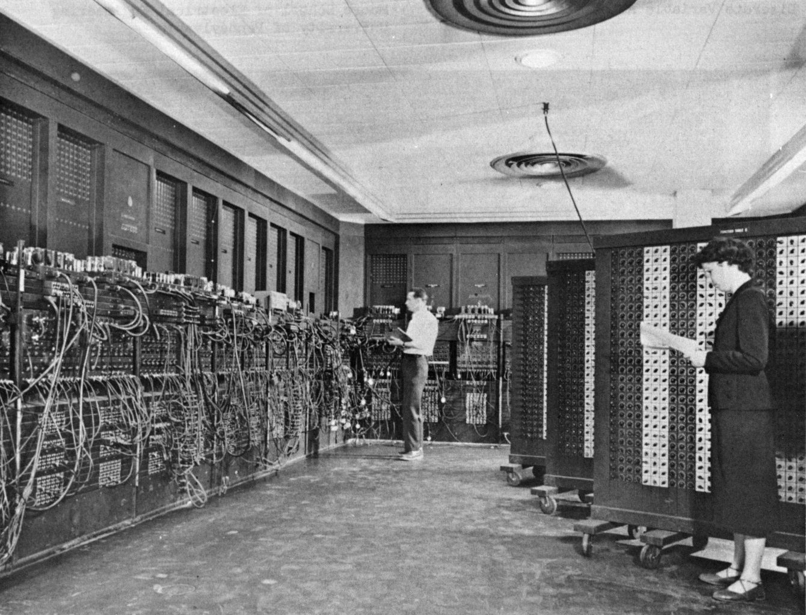

Unit 1 · Lesson 1
Can machines think?
You have seen the film. Now the question is yours, and to answer it we first have to know what a computer is.
What the test will ask
After this lesson you should be able to:
- Say what Turing's imitation game (the Turing test) is and why he invented it instead of defining 'think'.
- Tell the difference between the Bombe (electromechanical, one job) and Colossus (electronic, programmable).
- Explain Turing's 1936 idea of a universal machine: one machine that runs any program.
- Define a computer system with the four stages: input, process, output, storage, and tell data from information.
- Tell hardware from software, and put firmware and data in the right place.
- Put the key dates in order: 1936, 1941, 1943, 1945, 1947, 1958, 1971, 1981, 2007, 2022.
- Give three facts about ENIAC (1946) and say who programmed it.
The story
In 1950 Alan Turing wrote an article that begins with the question Can machines think? and then, in the very next sentence, says the question is useless: nobody agrees on what 'think' means. So he replaced it with a game. You chat by typing with two hidden players, a person and a machine. If you cannot tell which is which, Turing says, stop arguing about the word: the machine has earned it. That game is the imitation game, and the film took its title from it.
The machines in the film were real, but the film shows only one of them. The Bombe (1940) attacked Enigma, the cipher machine of the German army, navy and air force. It was electromechanical: spinning drums and electrical switches with moving parts, built for one job only: testing Enigma settings fast. It could not be told to do anything else. Three years later a telephone engineer, Tommy Flowers, built Colossus (1943) to attack a harder cipher used by Hitler's headquarters. Colossus was electronic: 1,500 glowing valves instead of moving parts, and it could be set up for different tasks. That is why Colossus, not the Bombe, is called the first programmable electronic computer.


Both machines were secret for thirty years. The Bombes were run by young women of the Women's Royal Naval Service on eight-hour shifts; Flowers paid for part of Colossus with his own money and was then ordered to burn the drawings. The first computers were born in a war and in silence.
Turing's bigger idea came earlier, in 1936, when he was 23. He imagined a machine made of a paper tape, a head that reads one square at a time, and a table of rules. Different tables, different machines. Then the master stroke: one special machine could read another machine's table from the tape and imitate it. One machine that can become any machine, just by being given instructions. That is a computer: the metal stays the same and the instructions change. It is why your phone can be a camera, a map and a chessboard in the same minute.
Nine years later the idea became metal. ENIAC (1945–46), in Philadelphia, was the first general-purpose electronic computer: about 18,000 valves, 27 tonnes, a room the size of a tennis court, as much electricity as a hundred kettles, and 5,000 additions per second. It was programmed by six women, by plugging cables and setting switches by hand. At the press day in 1946 they were not even introduced.


From there the story is the story of the switch getting smaller: the transistor (1947), the integrated circuit (1958), the first microprocessor, the Intel 4004 (1971), designed by Federico Faggin from Vicenza. Then the IBM PC (1981), the iPhone (2007) and ChatGPT (2022): Turing's game, played by a hundred million people.
The notes
Everything from the lesson, in order. This is the part to study.
The Turing test (imitation game), 1950
In Computing Machinery and Intelligence (1950) Turing proposed a test instead of a definition. An interrogator chats by text with two hidden players, a human and a machine, and must say which is which. If the machine is not identified reliably, it passes the test.
Why text? So that the voice, the face and the handwriting give nothing away: only the answers count.
The test is behavioural: it looks at what the machine says, not at what is inside it. That is exactly why this unit opens the box.
If you cannot tell the machine from the person, Turing says: stop arguing about the word 'think'.
Bombe vs Colossus
| The Bombe (1940) | Colossus (1943) | |
|---|---|---|
| Cipher attacked | Enigma (army, navy, air force) | Lorenz (Hitler's headquarters) |
| Technology | electromechanical: rotating drums and relays (moving parts) | electronic: about 1,500 valves (vacuum tubes), no moving parts for the logic |
| Programmable? | no: one job only | yes: set up with switches and plugs |
| Who | Alan Turing and Gordon Welchman, from the Polish 'bomba' | Tommy Flowers, Post Office engineer |
| Why it matters | a clever machine, but not a computer | the first programmable electronic digital computer |
The whole history of computing is the history of the switch: relay (mechanical) → valve (electronic) → transistor → integrated circuit. Same logic, smaller, faster, cheaper.
Turing's universal machine, 1936
An imaginary machine: an infinitely long tape of squares, a head that reads one square, writes a symbol and moves left or right, and a table of rules.
A universal machine can read any other machine's table from the tape and imitate it. One machine, any program: the idea of the general-purpose computer, nine years before one was built.
This is where hardware and software separate: the machine is fixed, the instructions on the tape change. The tape is memory; the table is the program.
Same metal, different instructions: that is what makes a computer a computer.
What is a computer system?
A computer is an electronic device that accepts input (data), processes it following a set of instructions (a program), stores data and instructions, and produces output (information).
- Input
- Process
- Output
- Input: data goes in (keyboard, mouse, camera, sensor).
- Process: the CPU follows the instructions of the program.
- Output: information comes out (screen, printer, speaker, motor).
- Storage: data and programs are kept for later (RAM while working, SSD or cloud for keeps).
Data is raw: 37.2. Information is data with a meaning: 'your temperature is 37.2 °C, slightly high'.
A computer system = hardware + software + data + people. Example: a washing machine. Input: the dial, a water sensor, a weight sensor. Process: the programme. Output: motor, pump, heater, beeper. Storage: the chosen settings and where it is in the cycle.
Hardware, software, firmware, data
| What it is | Examples | |
|---|---|---|
| Hardware | the physical parts: you can touch them (or drop them) | CPU, RAM, motherboard, SSD, keyboard, monitor, printer, cables, router |
| Software | the programs: sets of instructions that tell the hardware what to do; you can copy them, not touch them | Windows, Chrome, Minecraft, a Python script, a printer driver |
| Firmware | software stored permanently on a chip inside a device | the BIOS/UEFI of a PC, the program inside a printer or an Arduino |
| Data | the stuff the software works on; not hardware, not software | a Word document, a photo, a Wi-Fi password |
Analogy: the hardware is the piano, the software is the sheet music. Change the music and the same piano plays a different song.
Tricky cases: the Internet is a network (hardware + software + agreed rules, the protocols). A disc or cartridge is hardware; the game on it is software.
The timeline you must know
| Year | What happened | Why it matters |
|---|---|---|
| 1936 | Turing's universal machine (On Computable Numbers) | the idea of a general-purpose computer: hardware + software |
| 1941 | Zuse's Z3, Berlin (2,600 relays) | the first programmable, automatic computer, electromechanical |
| 1943 | Colossus, Bletchley Park (1,500 valves) | the first programmable electronic computer |
| 1945–46 | ENIAC, Philadelphia (≈18,000 valves) | the first general-purpose electronic computer |
| 1947 | the transistor, Bell Labs | a switch with no moving parts and no glass: the valve replaced |
| 1958 | the integrated circuit (Kilby, then Noyce) | many transistors on one chip |
| 1971 | the Intel 4004 (Federico Faggin, from Vicenza) | the first microprocessor: a whole CPU on one chip, 2,300 transistors |
| 1981 | the IBM PC | the desktop standard; Microsoft sells it the operating system |
| 2007 | the iPhone | a computer in every pocket, with a touchscreen |
| 2022 | ChatGPT | the imitation game, played by 100 million people in two months |
ENIAC, 1946: the facts
- Built at the University of Pennsylvania (Mauchly and Eckert) to compute artillery tables; announced on 14 February 1946.
- About 18,000 valves (vacuum tubes), 27 tonnes, 167 m² of floor, 150 kW of power (about 100 kettles), 5,000 additions per second.
- No stored program: it was programmed by re-plugging cables and setting switches, which took days.
- Programmed by six women: Kay McNulty, Betty Jennings, Betty Snyder, Marlyn Wescoff, Fran Bilas, Ruth Lichterman. Not credited for decades; honoured in 1997.
- Your phone is hundreds of millions of times faster, on a battery, in your pocket.
Check now
Quick questions. You see the answer at once.
Put the four things every computer does in the usual order.
- input
- output
- process
- storage
What is new about Colossus compared with the Bombe?
- it attacked Enigma
- it was electronic and programmable
- it was built by Turing alone
Hardware, software, firmware or data?
- a mouse — ?
- Chrome — ?
- the BIOS — ?
- a Word document — ?
Try it
Turing's game, for real. Each answer below was written by a person or by a chatbot.
Play Turing's game. Read each answer and guess: was it written by a person or by a chatbot? Then read the clue.
Paper version
Play Turing's game on paper. For each question, read the answer and write PERSON or CHATBOT, with one reason. Example: question "Add 34957 to 70764." Answer: "(after a pause of about 30 seconds) 105621". This is the answer Turing imagined in 1950: slow, and wrong (the right sum is 105721). A machine that wants to pass has to pretend to be slow and to make mistakes.
This is the imaginary machine of 1936, built in your browser: a tape, a head, a table of rules.
Press Step to watch the head follow the rules. Start with 'add one' on 1011, then try 111 and the 'flip bits' machine.
Paper version
Rules for 'add one': start on the LAST digit, state CARRY. Read 1 → write 0, move left, stay in CARRY. Read 0 → write 1, stop. Read an empty square → write 1, stop. Trace for 1011 (eleven): 1011 → 1010 → 1000 → 1100 (twelve). Same machine, different table of rules = different program.
Your turn
Exercises
From ★☆☆ (easy) to ★★★ (hard). Use a hint if you are stuck.
-
Exercise 1 ★☆☆
In Turing's imitation game, what does the interrogator do?
- opens the machine to look inside
- types questions to two hidden players and says which one is the machine
- measures how fast the machine calculates
-
Exercise 2 ★☆☆
The Bombe was the first programmable electronic computer.
True or false?
-
Exercise 3 ★☆☆
In which year did Turing describe the universal machine?
-
Exercise 4 ★☆☆
Put these in time order, oldest first.
- Colossus (1943)
- ENIAC (1946)
- Turing's universal machine (1936)
- the Intel 4004 (1971)
- the transistor (1947)
-
Exercise 5 ★★☆
A phone takes a photo. Match each step to its stage.
- light reaches the camera sensor — ?
- the chip runs the camera program — ?
- the photo appears on the screen — ?
- the photo is saved as a file — ?
-
Exercise 6 ★★☆
'37.2' is data. Which of these is information?
- 37.2 °C
- your temperature is 37.2 °C, slightly high
- a number
-
Exercise 7 ★★☆
Which statement about ENIAC is TRUE?
- it had a keyboard and a screen
- it was programmed by re-plugging cables, which took days
- it used transistors
-
Exercise 8 ★★★
Explain in two or three sentences why Turing's 1936 idea separates hardware from software. Use the words 'tape' and 'table of rules'.
Words of this lesson
- Turing test (imitation game) test di Turing
- a text chat with a hidden human and a hidden machine; if the interrogator cannot tell which is which, the machine passes
- interrogator interrogante / giudice
- the person asking questions in the Turing test
- electromechanical elettromeccanico
- made of switches moved by magnets (relays) and rotating parts, like the Bombe
- electronic elettronico
- made of valves or transistors, with no moving parts for the logic, like Colossus
- programmable programmabile
- able to be given a different set of instructions for a different job
- universal machine macchina universale
- Turing's imaginary machine (1936) that can run any program read from its tape
- computer computer
- an electronic device that takes input, processes it with stored instructions, stores data and gives output
- input input / ingresso
- data going into the computer
- process elaborazione
- the CPU following the instructions of a program
- output output / uscita
- information coming out of the computer
- storage memorizzazione / archiviazione
- keeping data and programs for later
- data dati
- raw facts and numbers, without a meaning yet
- information informazione
- data with a meaning for a person
- hardware hardware
- the physical parts of a computer
- software software
- the programs: instructions that tell the hardware what to do
- firmware firmware
- software stored permanently on a chip inside a device (BIOS, printer, Arduino)
- valve (vacuum tube) valvola termoionica
- a glass electronic switch used in Colossus and ENIAC, replaced by the transistor
- transistor transistor
- a tiny electronic switch with no moving parts (1947); billions on every chip
- integrated circuit (chip) circuito integrato (chip)
- many transistors made on one piece of silicon (1958)
- microprocessor microprocessore
- a whole CPU on one chip; the first was the Intel 4004 (1971)